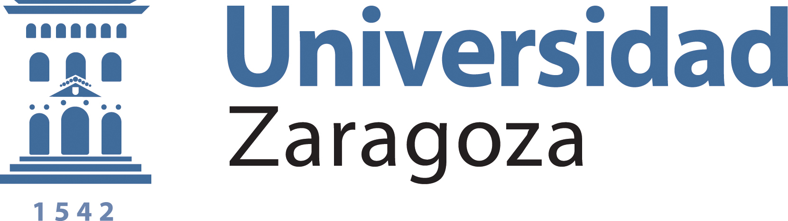
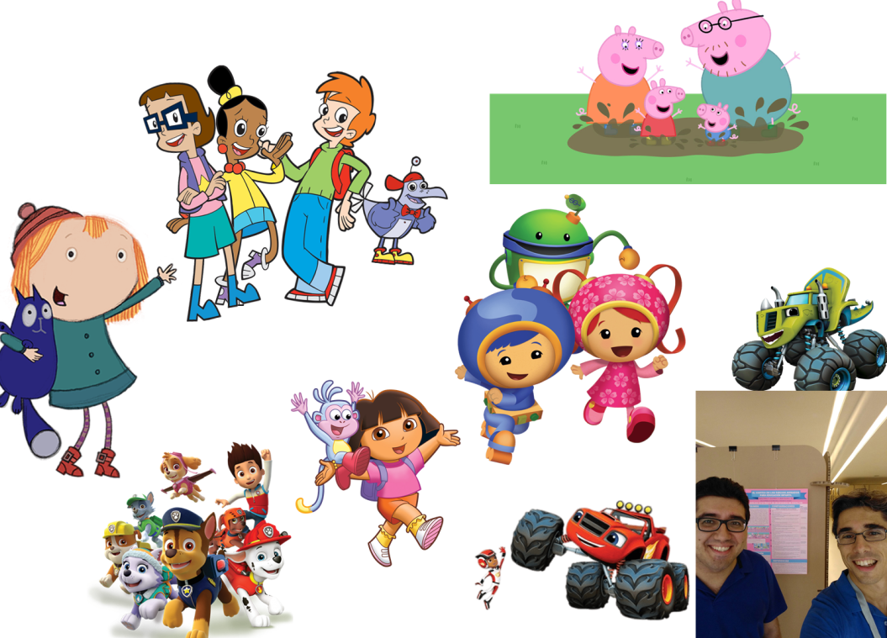
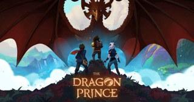
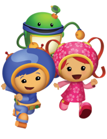
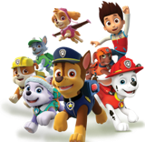
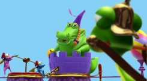
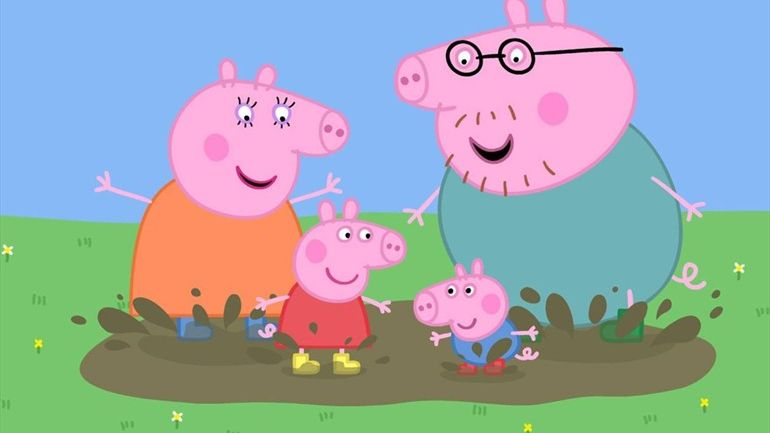
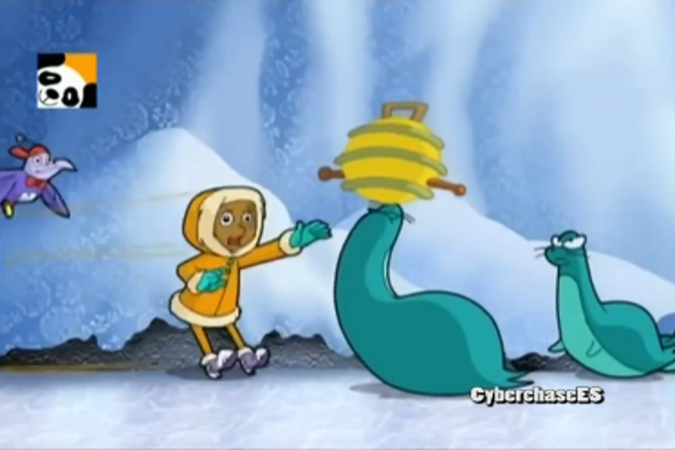
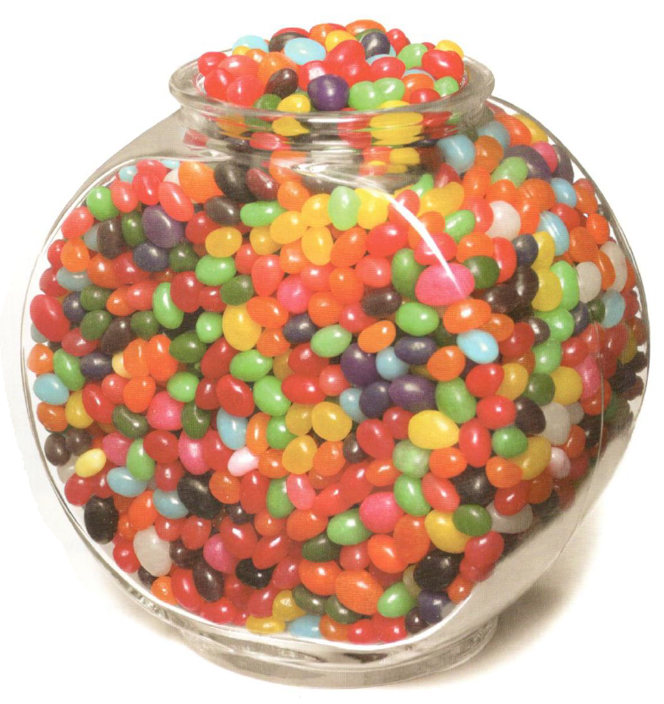

Vídeos educativos de matemáticas en línea
Una reflexión desde los contenidos hasta lo afectivo
Pablo Beltrán-Pellicer
@pbeltranp
 
5 de octubre de 2019
Una empresa docente - Bogotá, Colombia.
Acceso a la presentación

¿Cómo empieza todo esto?
Con una historia

Cómo no usar las pelis y las series en el aula
Hobbs (2006) enumera formas no adecuadas de utilización en el aula:
- No tener un objetivo instruccional bien definido.
- No utilizar la pausa, el rebobinado y no volver a visionar el material.
- Que el docente se tome las proyecciones como tiempo de descanso o para preparar otras cosas.
- Que el docente desconecte mentalmente en las proyecciones.
- El docente utiliza las proyecciones como una recompensa para su alumnado.
- El docente emplea este recurso únicamente para captar la atención del alumnado.
- El docente utiliza el vídeo como una forma de regular el comportamiento del alumnado.
Cómo se pueden usar las pelis y las series en el aula
Los gazapos

Una actividad directa es la de detectar un error (Sorando, 2007):
- Gazapos de contexto.
- Gazapos de concepto, de cálculo y de razonamiento.
Más actividades
- Resolver una situación que aparece, explícita o implícitamente en el fragmento.
- Mostrar simplemente el campo de aplicación, no se trata de resolver un problema.
- Como introducción de un tema o revisión del mismo. #mathtalks
- Dramatización.
Líneas de investigación
Trabajos Fin de Grado
 

Universidad de Zaragoza
- Alicia Modrego (EI): La patrulla canina, Equipo Umizoomi.
- Alejandro Abril (EP): La casa de Mickey Mouse.
- Raquel Vela (EI): Peppa Pig, Pocoyó, Las aventuras de Coco Drula.
- Ana Galindo (EI)
Artículos y congresos
Sección Matemáticas animadas en EDMA0-6.
Beltrán-Pellicer, P., Arnal-Bailera, A., & Muñoz-Escolano, J. M. (2018). Análisis del conteo como contenido matemático en un episodio de dibujos animados para educación infantil. Unión, 52, 236-249. Enlace
Beltrán-Pellicer, P., Arnal-Bailera, A., & Muñoz-Escolano, J. M. (2017). Análisis ontosemiótico de un episodio de dibujos animados con contenido matemático. En CIVEOS 2. Enlace
Jornada de Educación Matemática en Aragón (JEMA)
¿Qué matemáticas hay aquí?

Puesta en común…
¿Nos ponemos gafas matemáticas?
- Situaciones-problema: aplicaciones extra-matemáticas, tareas, ejercicios, etc.
- Lenguajes (en sentido amplio): términos, expresiones, notaciones, gráficos, etc. Diversos registros (escrito, oral, gestual, etc.) y representaciones.
- Propiedades y otros enunciados: conceptos-definición, propiedades y proposiciones.
- Procedimientos: algoritmos, operaciones, técnicas de cálculo, etc.
- Argumentos:para validar o explicar las proposiciones y procedimientos, deductivos o de otro tipo.
Un episodio sobre estimación
¿Qué sabemos de estimación?
Contenido común a infantil, primaria y secundaria. ¿En qué consiste la estimación?
- Valorar una cantidad o el resultado de una operación aritmética.
- El sujeto que hace la valoración tiene alguna información, referencia o experiencia sobre la situación que debe enjuiciar.
- La valoración se realiza por lo general de forma mental.
- Se hace con rapidez y empleando números lo más sencillos posibles.
- El valor asignado no es exacto, pero sí adecuado para tomar decisiones.
- Se admiten distintas aproximaciones al valor dependiendo de quién realice la valoración. (Segovia, Castro, Rico y Castro, 1989).
- Relacionada con el desarrollo del sentido numérico, numeracy, competencia matemática,…
Cyberchase

Conclusiones
- Concienciarnos acerca de la existencia de recursos que no vienen en libros de texto y que están accesibles en la casa de nuestros alumnos: los dibujos animados, muchos de ellos producidos con una intencionalidad educativa.
- No promovemos que se vea más TV. Asumimos que se ve.
- Muchas maneras de llevarlo al aula:
- Gazapos, detener un episodio, resolver problemas, como introducción ofreciendo un contexto, dramatización, etc.
- Necesidad de tener herramientas para analizar el recurso y diseñar las secuencias didácticas.
- Aquí hemos usado los dibujos, pero el proceso seguido sirve para cualquier otro recurso (juegos, manipulables, libros de texto).
- Futuras vías de colaboración o investigación.
Para terminar: ¿nos ponemos a prueba

Créditos y referencias
Lista de referencias
Sección Matemáticas animadas en EDMA0-6.
Beltrán-Pellicer, P., Arnal-Bailera, A., & Muñoz-Escolano, J. M. (2018). Análisis del conteo como contenido matemático en un episodio de dibujos animados para educación infantil. Unión, 52, 236-249. Enlace
Beltrán-Pellicer, P., Arnal-Bailera, A., & Muñoz-Escolano, J. M. (2017). Análisis ontosemiótico de un episodio de dibujos animados con contenido matemático. En CIVEOS 2. Enlace
Créditos
Compartir el conocimiento de forma libre es una buena práctica.
En estas diapositivas se han utilizado materiales disponibles en abierto y se han citado las fuentes correspondientes. El contenido de la presentación está publicado con licencia Creative Common CC-BY-SA-4.0, lo que quiere decir que puedes compartirla y adaptarla, citándonos (Pablo Beltrán-Pellicer y José Mª Muñoz-Escolano) y poniendo un enlace a https://pbeltran.github.io/elemprob1.
Siéntete libre de trabajar con este material y de contactar conmigo para compartir tus reflexiones.
Presentación realizada con Reveal.js, Pandoc, MathJax y Markdown. El código fuente está disponible en https://github.com/pbeltran/pijama-jaem
Las imágenes son propias y de dominio público, salvo las que se ha citado la fuente en su diapositiva y las obtenidas en https://www.freepik.es: